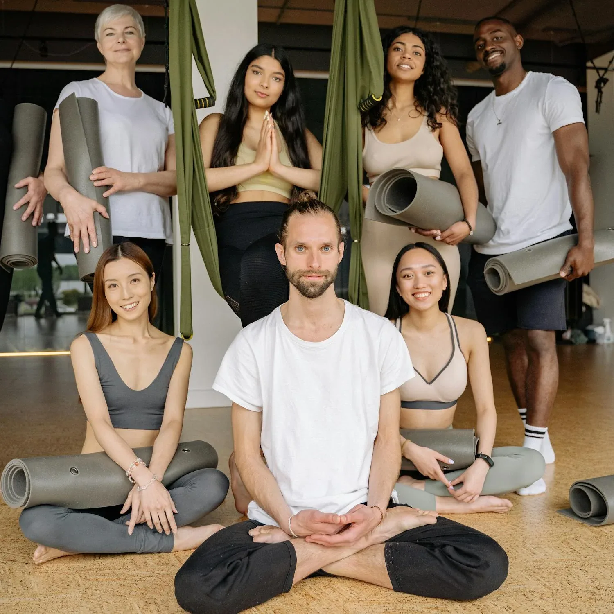

Alex possessed a rare and powerful gift: he genuinely cared. He moved through life with the firm belief that true success is measured not by what you accumulate, but by who you lift up. He lived by the simple yet profound slogan, "We rise by lifting others." In his lifetime, he touched the life of everyone he met, offering a helping hand, a word of encouragement, or a comforting presence. Our foundation is his legacy. We exist to carry on the work that was so close to his heart. By stepping in where there is need and putting a smile on the faces of the less fortunate, we strive to be the hands of Alex in our community. Through his memory, his mission lives on.
Alex Okorie believed that a healthy community is a thriving community. He was a comforter, a man who offered a helping hand to those in pain. In his memory, we are committed to being a source of healing and comfort for the less fortunate. Our mission in healthcare is to: Improve Access: Provide financial and logistical support to individuals who cannot afford essential medical treatment, surgeries, or medications, ensuring that no one suffers in silence due to a lack of resources. Support Facilities: Partner with local clinics and hospitals to donate vital equipment and supplies, strengthening the healthcare infrastructure in underserved communities. Promote Wellness: Organize health awareness campaigns and free medical outreach programs, focusing on preventative care and bringing basic health services directly to those who need them most. By stepping in where there is a need, we aim to put a smile on the faces of the sick and their families, offering not just medical aid, but the comfort of knowing someone cares.
Engr. Alex Okorie’s own journey from humble beginnings to extraordinary success was a testament to the power of hard work and opportunity. He ensured his own children had access to a better future through education. The Alex Okorie Foundation will extend this privilege to as many young minds as possible.
Our mission in education is to: Provide Scholarships: Identify and support bright, determined students from disadvantaged backgrounds, removing financial barriers so they can pursue their academic dreams, just as Alexok would have wanted.
Enhance Learning Environments: Improve the quality of education by renovating classrooms, providing learning materials, and supporting teachers in under-resourced schools.
Mentor Future Leaders: Create mentorship programs that connect young people with role models, instilling in them the values of resilience, hard work, and community service that Alex exemplified.
Through these efforts, his spirit of generosity will continue to empower future generations to build something meaningful from nothing.
Alex lived by the profound truth, "We rise by lifting others." He believed true success is measured by who you lift up. This pillar is dedicated to improving the shared spaces and living conditions of the communities he loved, ensuring that everyone has a foundation upon which they can build a better life.
Our mission in community development is to: Support Basic Needs: Organize food drives and distribution programs to provide for the most vulnerable, ensuring that families have their basic needs met.
Improve Community Assets: Undertake small-scale infrastructure projects such as the repair of boreholes for clean water, the renovation of community centers, or the improvement of local marketplaces.
Foster Unity: Bring community members together to identify their most pressing needs and work collaboratively to find solutions, strengthening the bonds of mutual support that Alex held so dear.
In this way, the foundation acts as the hands of Alex in the community, carrying on the work that was so close to his heart and ensuring his legacy is not just remembered, but actively lived, every single day.